|
||||
 |
 |
 |
||
National Youth Championship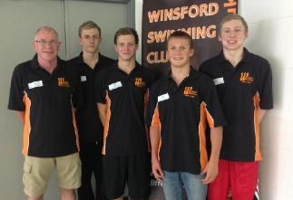 This year’s Championship had a slightly different feel to it, as we had no female swimmers, a swimmer who was combining his pool swimming with Open Water Swimming (first ever for the club) a swimmer competing in his first ever National Championship and relay team who just squeezed in on a time that was achieved at the Regional Championships back in June. Full report here Salford - big day - 27 medals The conditions were ideal on poolside very fresh (well fresh as can be for a poolside!), the sweets, biscuits and drink were delivered frequently (filled the gap in the stomach!) by all the staff at Salford, results were up in a flash (faster than flash Gordon!), there was no waiting for start lists (printers very fast!), the meet ran very quick with no stoppages (like a running river!) and all the Salford staff were very helpful (thanks for chicken curry!). It was a superbly run meet with no stone left unturned. So all this, put the coach (me) in a very good mood (well for most of it!).! Salford full report Wolverhampton SC - July Ashley Hogg – Open Water Success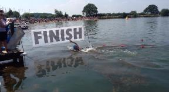 On the 7th of July Ashley represented Winsford ASC & England Talent North at Bosworth Park in Leicestershire. He was victorious in the 15 & 16 year 2K Open Water competition, being awarded Midland Champion. He won in a time of 23:51.49, a personal best by 3 and half minutes! Summer Development Meet - Winsford - July Setting new meet records for Winsford were - Amber Rose 12 - 100m Free 1.07.82 / Lydia Rose 12 - 50m Back 38.46 / Jordan Gaskill 14 - 100m Fly 1.10.51 and Alisha Hawkins 12 - 100m Breast 1.30.00 Liverpool Sprint Meet - July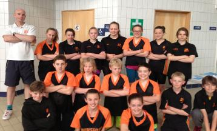 Winsford swimmers are fighters for there is no question about that, our swimmers do put in some great work in training and put in some superb work into their racing. It was very interesting to watch our swimmers racing and trying to win the heat or beat the person in the lane next door or simply racing the clock. It is very difficult to turn a chicken into a tiger, luckily for us we had tigers there on the weekend, all of them dressed up in body armour and carrying a whole range of weapons for the fight ahead! That for me is so pleasing because we had 21 gladiators, tooled up and for any coach all he/she can ask is for their swimmers to try their very best and all did that on the weekend. Full report NWR Age Championships - Manchester - June All 8 swimmers did fantastically well and so I am now going to write a bit about each swimmer, in order of how many events they qualified for and if any swimmers had the same number of qualifying times I then sorted it by alphabetical order. So first up is: Read full report here NWR Age - Ashley Hogg Cath Ankers - Wrexham - June The sun was out as I woke up, so I knew straight away we were going to swim fast, very fast and enjoy the days racing. Winsford always swim fast at Wrexham (In fact we swim fast everywhere!) and I was trying to work out why and it suddenly came to me, it was obvious the club has got some great coaches! Great coaches, great swimmers is a lethal cocktail and at Wrexham that was proved. It was so pleasing to see everyone competing with absolute fire (and sweets!) in their belly and racing with absolute focus and determination. I love to watch racing and our swimmers love to race and it showed in some of the results we gained. Racing is in our swimmers blood and win, win or win everyone loved their racing. - Read full report No Frills - Sheffield - May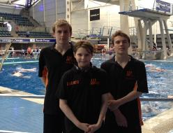 Day one (Saturday 25th) Charlotte competed in women’s 800m Freestyle, her time of 10min 46.26sec wasn’t a long course personal best, but her splits in achieving that time were very consistent, which is a skill in itself. Callum had a couple of events with his first race being in the men’s 200m Individual Medley which saw him achieve a personal best time in the heat’s with a time of 2min 23.61sec. His 2nd race was in the 100m Freestyle where he managed to set yet another personal best time of 55.94sec Day two (Sunday 26th) This was the busiest day of the two, with Charlotte & Brandon both having three races to contend with and for Callum two races in which to gain more personal best times. Charlotte (200m Individual Medley, 100m Freestyle and the 400m Freestyle) - Brandon (100m Butterfly, 200m Freestyle and the 100m Breaststroke) - Callum 100m Butterfly and the 100m Breaststroke) Charlotte set a new personal best time in the women’s 200m Individual Medley, her time of 2mim 56.99sec was a 2sec pb, Charlotte followed this up with another personal best time in the 100m Freestyle with a time of 1min 12.30sec and to finish off what was for her a good weekend of swimming, she managed to set another personal best time of 5min 04.94sec in the 400m Freestyle. In the 100m Butterfly, Brandon was looking to gain his National qualifying time. Stepping up to youth level was never going to easy and with a national time set at 59.77 he would need to be at his very best in-order to achieve it. Going into the race, Brandon was fairly confident and his time of 28.94sec for the1st 50m suggested that he was well on course to achieve his goal; however, with poor 2nd 50m his time of 61.75sec fell well short of target time. Brandon had two other swims, the 100m Breaststroke and 200m Freestyle, both were slightly below his best. Callum went on to set a further two more personal best times, his first was in the 100m Butterfly 63.83sec and then the 100m Breaststroke in a time of 1min 17.48sec. Charlotte - Swimming in a distance (800m) and middle distance (400m) event in a long course pool can be very demanding. To swim at the right pace and to maintain that pace over the longer distance requires a high degree of determination and guts, Charlotte has demonstrated beyond doubt that she has that ability. Callum - Callum is a member of the Winsford 4 x 100m Medley National Relay Team, so swimming in a long course event at this stage of the season was an ideal opportunity for him to test himself over the 50m course. Setting four personal best times is a sign of confidence and with the National Championship not that far away, Callum’s swims could prove to be a great asset for the relay team. Brandon -This was always going to be a tough weekend for Brandon, having got so close to his National Qualifying time before, the pressure on him to try and to achieve it in an event that you know will be your last opportunity, can affect the way you perform. Unfortunately for Brandon, this proved to be the case. Although Brandon was unable to achieve his National Qualifying Time at this event, he would have gained a lot from the build up to this event and the way he will need to approach all NQT events in the future. I’m generally pleased with all three swimmers in the way they approached this weekend and given the success we had at Llandudno, Winsford Swimming Club is in great shape. Keep up the good work - Dave Conwy White Meet - Sun, Sea, Stones and Swimming - May After a very long journey to get there it was great to see that the pool was an outstanding facility and the room on poolside was good so I was in a good mood, when the coach is in a good mood the racing is normally even faster from our swimmers and as to form our swimmers did not disappoint. It was a very fast pool, our swimmers were swimming with great skill and determination and it was great to see the energy and focus they put into their swims. Many swimmers had a lot of races in a very short amount of time but like always our swimmers rose to the challenge and performed exceptionally well, time and time again. Saturday really took the biscuit, it was probably the longest day our swimmers have ever had on poolside (12 hours), the heat was sweltering and the amount of racing was crazy! It was a good job our swimmers were like Duracell Bunnies; they never ever got tired or stopped all day. This just shows what they are made of and what great diets they have to keep the body fuelled, no sweets or crisps or chocolate or subway (well not much anyway!) just lots and lots of pasta and milkshake! So many highlights it is difficult to mention everything but everyone deserves a mention, so well done to Abbey Brown for swimming with great skill and determination, getting numerous PB’s and medals, one for the future, Sophie Cliffe for swimming with more belief and racing a great 200 Free and enjoying her racing, Ellie Cushen who is very new to competition but showed great maturity in all races and learning a lot over the weekend, Domi Dean who achieved a 100% PB rate and swimming with great technique as always, Alisha Hawkins who swam outstanding all weekend with many medals and PB’s, Amelia Magee for racing hard and fast and always giving her all, Hannah Magee like her sister always dependable and always racing at her best, Katie Wilson for gaining more and more confidence and for racing some very good BK and Free events, Finn ‘no shoes’ Armitt for being a beast in the pool, he really does have no fear for swimming fast, Harry ‘no shoes’ Armitt for swimming a very good 50 Fly and racing with great fight, Jay Cushen for being outstanding on all swims and for wanting to win at all costs, Josh Egerton for racing lots of events and for a superb 400 Free a great race with great determination from the first to the last stroke, Sam Hancock for racing to his best whilst carrying an injury, well done, Cameron Jones for always battling and always giving his all, a great 100 Free, first time under 1 minute, Ethan Jones for nearly collapsing after his 200 IM, just shows what he is willing to go through for his coach! Swam great all weekend, Alex Law for being fantastic all weekend, a great captain for the meet and racing a great 400 IM, 200 Free & 100 Fly, Jamie Young who must have PB’d every event, some great racing and leading many of his heats from start to finish. It was a great effort from all swimmers in a very challenging environment of extreme heat and extreme length. That Saturday will live long in the memory, it was brutal! I have decided to choose a number of swimmers for swimmer of the meet. As always it was very difficult but for the girls I have chosen Alisha Hawkins, who raced outstanding all weekend, most notable in the 400 Free (4.57) and 100 Free (1.06) and many other superb races. Alisha may not be the biggest girl in the races but she has without doubt got the biggest heart, she loves to race and over the weekend dropped a lot of PB’s and gained 3rd in the 12 under age category. For the boys this was even more difficult to choose, so I chose 4! I eventually went for Alex Law, Cameron Jones and Ethan Jones as these three all achieved the top boy award in their age groups and all raced with so much fight and all achieving countless PB’s. It was great to see Winsford boys at the top of the table. I would also like to add Jay Cushen to that list as his racing and improvement over the last 6 months has been phenomenal and showed true class at Llandudno over the weekend. Even though I chose 5 swimmers every swimmer raced and performed to an exceptionally high standard and all should be very proud, because I am. I would like to say a big thank you to Claire Brown, Ruth Egerton and Neil ‘no shower’ Hawkins! For providing great team management, thank you to all parents for the support and for their perseverance in Turkish bath like temperatures, and a massive thank you to all the swimmers for making the meet so enjoyable for me. In conclusion, it was a marathon and a half of a weekend but what made it worthwhile was that the pool was very close to the sea, at dinner time we could go out and watch the waves crash against the pebbles on the beach and eat our sandwiches and pies. Even though the meet was very long it was very rewarding for our swimmers, all swam superbly well. I went home very tired, very hot and very, very hungry! What didn’t help my hunger was that when I arrived back I could smell the BBQ my next door neighbour had going! At closer inspection from my bedroom window they were having burgers and sausages and some chops! It looked very tasty but I couldn’t pluck up the courage to ask them for some so I had to make do with my Hungry Joes microwave lasagne meal, which hit the spot! Hungry, tired and hot but none of that mattered to me as it was a job well done from all 17 swimmers from Winsford SC who raced in sunny Llandudno. I am a happy coach, so a huge Well Done to one and all, hope you all have a good half term and see you all at training. - Dan Winsford Came, Winsford saw, Winsford conquered. Winsford crowned Top Club at Wigan - May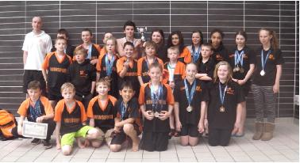 Soldiers, soldiers, soldiers, no not what we dip into our eggs every morning but our swimmers from Winsford who went to war in Wigan. In previous weeks we took around 27 swimmers to Satellites and Wrexham but this week we took 34 swimmers. We went to Wigan in force ready to swim fast, very fast and eat some sweets! It was probably the biggest team we have ever taken to an away Open Meet, it was fantastic to see so many little swimmers racing and enjoying themselves. Racing is about having fun and challenging ourselves and boy our swimmers definitely had fun. Winsford SC parents definitely breed strong kids because on Sunday all swimmers performed with great big heart, guts and determination. I was so pleased with everyone’s attitude on poolside and attitude when racing. Behind the block our swimmers looked like they were ready to kill someone (probably me for the training they receive!), they looked so focused on the race in hand and we certainly did perform. NWR Youth Championships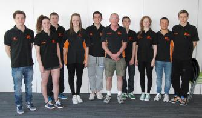 The star of the show was Oliver Rose. He qualified for the finals in 50m Breaststroke, 50m Butterfly and 100m Breaststroke. He gained a bronze medal in the 100m Breaststroke but best of all, his time of 1.09.93, qualifies him for the British National Championships to be held in July. This is a huge and well deserved achievement. Brandon Sharkey qualified for the finals in three events. The 200m Butterfly, 400m Individual Medley and 100m Butterfly. He attained a personal best time and won a bronze medal in the 400m Individual Medley. Alex Law made finals in 100m Backstroke and 50m Backstroke with Callum Chapple in the 200m Individual Medley. Eighteen year old Charlotte Carter qualified for the 50m Backstroke final. Winsford are also proud to announce that they have learned that their 400m Youth Medley Relay Team of Callum Chapple, Alex Law, Oliver Rose and Ashley Hogg have qualified for Nationals. Wrexham Spring Meet - Winsford Boss the racing in Wales We had 25 swimmers competing and so it would be impossible to mention every race or highlight however as a group of swimmers this meet matched the results of Satellites Open Meet. Every swimmer performed out of their skin and swum with great fight and discipline. At Winsford SC we have many soldiers and we certainly do battle in all races. It was superb to see our swimmers coming out on top in a race situation especially with such a heavy programme. The days were long with 6 sessions, 12 hour days plus lots of racing. Some of the swimmers arms and legs must have felt heavy in the last sessions on the Saturday and Sunday but all swimmers kept on fighting, right till the last race. Our swimmers at Wrexham deserve my full respect for the guts, mental toughness and heart they have shown. I am so proud of the warrior spirit and I can honestly say if we ever went to war I would want these swimmers on in the trench next to me. Winsford swimmers picked up so many medals, Gold, Silver, Bronze and top 6 placings it was incredible. We were pirates last weekend, this weekend we were kings and Queens with all the Gold around our necks! I can honestly say it was a joy to be poolside with the swimmers because they swum super fast and also the team spirit was first class. It is great to see swimmers cheering each other on and supporting each other. Team spirit was a major part of the team’s success over the weekend, team spirit is everything to us. Like last week we had huge numbers but I only feel it is right to mention every swimmer even if it brief, so well Done to: Becky Alderman for picking up a mountain of medals and being a leader for the girls, Finn Armitt for swimming so fast on everything and breaking the 100 Fly Record, Harry Armitt for always giving his all and swimming with great skill, Adam Blackshaw for always racing with fight and who has improved a lot, Alissa Blackshaw who always comes back after a race with a smile and who had a great 400 Free, Sophie cliffe who has super technique and raced with more confidence, Faye Coleman who raced with determination picking up some great PB’s, Domi Dean who swims with top technique and top skills and many PB’s, Alice Deeming who raced superbly all weekend with huge improvements, Will Deeming who showed massive improvements on all swims, especially Fly, Josh Egerton who raced with great PB’s and showed his improvements on all the Form strokes, Nile Gibb who raced a great 100 Free PB, well done, Sam Hawes who swam a fantastic 50 Free, Alisha Hawkins who was a warrior all weekend, outstanding effort and racing and many PB’s, Brendan Ion for achieving a 57 seconds 100 Free, well done, Ethan Jones for a fantastic 400 IM & 200 BK, well done mate, super talent, Hannah McEnaney for a superb 400 Free and also racing with fight, Eleanor O Grady for PB’s on all swims, great improvements on all races, Charlotte Pagett for having first class attitude and swimming with mental toughness, huge PB’s, Amber Rose for swimming very fast and showing great improvements and potential, Lydia Rose for superb Breastroke and IM, all round great racing, Adassa Sproul for racing with great power and with great technique on the free, Katie Wilson for showing a lot more killer instinct behind the block, huge potential swimming with lovely feel for the water, Ethan Wright as always swims 1000%, superb racing and a very clever racer, Jamie Young who after being ill all week did some amazing PB’s. I could write a paragraph on every swimmer because all raced superbly well on lots of events but the snooker final will be on TV soon so I haven’t got time unfortunately! Also I haven’t got space to fill it all in on one side of A4! I just hope by reading this report all the swimmers realise what they achieved over the weekend; it was phenomenal and so proud to be with you all and watch the Winsford swimmers dominating the waves. A big thank you to the marshalls for the weekend, Sarah and Neil Hawkins, Jenny Warburton, Lisa cliffe and Andrea Blackshaw, and the parents for their support all weekend and most of all to the swimmers, this meet was a marathon but it makes it all worthwhile to be with you on poolside, especially when you race so fast. Also a thank you to Wrexham SC for the dinner you gave me, Sat (Cottage pie, carrots and peas) Sunday (Roast dinner‐ Chicken, carrots, roast potatoes and gravy & cake), it was very tasty. Also thank you to all swimmers who fed me throughout the weekend on sweets, crisps, Jaffa cakes, marshmallows & KFC!! Swimmers of the day, sorry can’t choose! But event of the weekend was the girls 400 Free, We dominated the event and that for me was the highlight out of all events. Well Done to everyone, we are all small cogs in a big, mean fighting machine. Together we will succeed. Final message of Good Luck to Ronnie o Sullivan this evening in the snooker!! Thanks, Dan Goodwin NorthWest Regional Age Swimmers Ethan Jones Satellites - April I could go through every event but I haven’t got time as we had 26 swimmers competing! However what I will say is that I have never known a meet where so many of our swimmers swam so fast all at the same meet. Sometimes at meets there are ups and downs but at the Satellite Open meet every swimmer can take a lot of away from the racing. I am not sure what our swimmers were eating to make them swim so fast (probably lots of sweets!!) but whatever it was I want some. We sure did show what the other clubs what racing was about, it was so pleasing to see our swimmers coming out on top. Lots of swimmers had many races with some swimmers racing back to back with a 5 minute turn round, not one swimmer moaned or cried or had a tantrum. Every swimmer raced with great fight and heart and got on with the job. Winsford swimmers were like pirates from the Caribbean we plundered all the medals at the meet, I don’t know how many we won because I haven’t counted them but we must have won hundreds and maybe more! Also so many PB’s and top 8 finishes and finals, it was unbelievable! It was great to see our swimmers race with great courage, not being scared to take the races out strong and not being scared to fail. All of our swimmers wanted to race so much they were foaming at the mouth whilst waiting on the marshalling chairs!! Racing is not for some swimmers from other clubs but our swimmers love it and love to go through the pain, our swimmers believe pain is fun, and I agree! It is difficult to mention everyone because we had so many swimmers but because everyone swam so well I will give it a go (but only brief comments!) in alphabetical order, well done to: Abbey Brown for gaining lots of medals, PB’s and racing with heart and a smile, Adam Blackshaw for the best 100 Fly final I have ever seen, what a last 25m!, Alex Law for many solid swims and superb attitude all weekend, Alisha Hawkins for swimming fast and gaining 2 more regional times and being so loud!, Alissa Blackshaw for a superb 200 Free, Amber Rose for blitzing the 50 Free, Amy Booth for racing hard and a great 100 BK final, Ash Hogg for breaking every record in the book, what a swimmer, Callum Chapple what can I say unbelievable racing superb weekends work, Cameron Jones what a weekend, PB on every single race, Charlotte Pagett who gained two more regional times, and who is also a soldier!, Domi Dean for swimming very fast and with outstanding skill, Elenaor O Grady for some very gutsy swims, Ethan Jones who gained another regional time and a year early! Superb attitude, Ethan Wright who fights in every event, swimming a great 200 Brst, Hannah Young who fought in all races and achieved some great PB’s, Isobella Burton for gaining two regional times and coming very close to many more, first class all‐round swimmer, James Shanley for racing with great determination, captain fantastic!, Jamie Young always giving 100% and swimming pb’s, Jay Cushen racing hard and with great skill for someone so young & lots of medals, Jordan Gaskell swimming outstanding smashing all PB’s, Josh Egerton for achieving Regional times in the 200 Free, great race, Kate Young for some superb swims on the Saturday very fast, Katie Wilson for achieving two PB’s and swimming with a smile on her face, Lydia Rose for racing hard and quietly going about her business, Oliver Rose for a fantastic swim in the 50 Brst and Sam Hancock for achieving two big PB’s in the 200 & 400 Free. I think I have mentioned everybody, if I have missed anyone off please send your complaints to Dave Pettengell!!! But seriously though the whole weekend was a joy, we are very lucky to have so many talented swimmers at the club and so fortunate to have swimmers who have guts and heart. All swimmers preformed like gladiators and that is what we are about. Together at Winsford we can achieve anything if we all fight together. Thanks to all the chaperones, Neil Hawkins, Claire Brown & Sue Wright for doing a great job making sure everyone was up in time for their race. Also thank you to all parents for the fantastic support from the balcony, we have by far the loudest supporters in the region and a great help to all our swimmers who were racing in the finals and the final and biggest thank you goes to the swimmers, top class attitude and racing from all, well Done. I sometimes pick a swimmer of the meet but it would be an impossible task to choose so I will give it to everyone. A very final special mention to all Age Group Regional Qualifiers who gained times throughout the season and at the meet this weekend, swimmers competing in Manchester in June are: Alisha Hawkins, Ash Hogg, Charlotte Pagett, Ethan Jones, Eleanor O Grady, Isobella Burton, Josh Egerton & Lydia Rose. I am going to watch snooker now, see you all Tuesday! Dan Goodwin. Bristol level 1 meet - April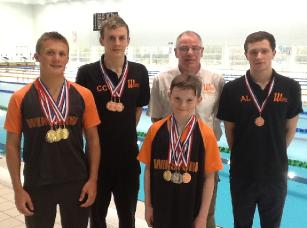 Ashley’s gold’s were won in the 400m & 200m Free, 400m Individual Medley, 100m & 50m Butterfly and the 200m Breaststroke and a silver in the 200m Individual Medley. Personal best times were achieved in the 400m Individual Medley, 200m Free, 200m Breaststroke and the 50m Butterfly. To add to his success, in both the 400m Individual Medley and the 400m Free, Ashley’s times were good enough to give him 2nd place overall in the open boys events. Ashley’s all round performance made him the most successful swimmer of the competition. For Jay Cushen (9 - pictured right) this was his first long course competition and what great weekend he had. Jay won 5 medals in total of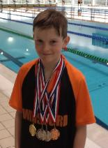 which 2 were gold, 2 were silvers and 1 was a bronze. Jay set personal best times in all his swims. Callum Chapple (16) had a good weekend, competing in 8 events, Callum won 3 bronze medals in following events, 200m Free, 50m Breaststroke and the 50m Free, he also set best times in the 100m Free, 50m Fly and the 50m Backstroke. Callums other events were in the 200m Individual Medley and the 100m Breaststroke. Alex Laws (17) made good of this excellent facility, by winning a bronze medal in the 100m Backstroke, Alex also set a personal best time in the 50m Fly, Alex went on to compete in the 200m & 50m Backstroke plus the 100m of which two of these events were seasonal best times. My overall assessment of this competition is one of great satisfaction. The venue was excellent; the pool is fast and very well laid out. Access to the swim down pool is direct and the space around the pool is sufficient. There is a Premier Hotel within walking distance of the Pool and plenty of eating places. The competition was good as it provided competition for 9 year olds. There were many clubs from the Bristol area and from the South West, as well as clubs from the Midlands, Cambridge and Essex. The two furthest northern clubs were Ellesmere Port and Winsford. Bristol will be holding a level 3 meet later this year and this particular meet at the same time next year. For those of you who are looking for competitive diversity, then this is one competition well worth doing. Callum Chapple report of the Meet Saturday morning we arrived at the pool to discover they had put additional benches out for everyone to sit on. The gala ran really smoothly and the pool itself was 'fast'. We all managed to secure a medal and several pb's were also achieved. As there was no evening session it finished both days at 5:30pm which was great because it meant we could drag our parents and Dave to Frankies and Bennies before retiring early for some well-deserved sleep. Sunday was a repeat of Saturday, well ran, long enough breaks and an early finish. More medals and pb's were won which left us with a positive finish. Sheffield Premier Open Meet - Mar Fourteen year old Brandon Sharkey qualified for the final in the 100m Butterfly event after producing a personal best, he then stormed in with another PB time of 1.00.51, earning him a well deserved bronze medal. Twelve year old Isabella Burton, Fifteen year old Oliver Rose, sixteen year old Callum Chapple, seventeen year old Alex Law, seventeen year old James Shanley and eighteen year old Charlotte Carter swam their hearts out in a gala that attracted many of the country’s best swimmers. Eighteen year old Vicky Cunningham, now representing Loughborough University, qualified for finals in the 50m Freestyle and 100m Freestyle. Dave Pettengell stated that to qualify for a gala of this level is an achievement in itself and he is very proud of all his swimmers. NorthWest Regional Youth Swimmers Brandon Sharkey Cheshire Champs - March 2013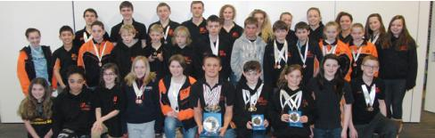 Nine year old Jay Cushen, making his debut at the Championships, showed that he is a force to be reckoned with by gaining gold medals in the 50m Freestyle, 50m Backstroke, 100m and 200m Individual Medley . He also took a bronze in the 200m Breaststroke. His performances won him third place in the BAGCATS. Ten year old Abbey Brown also gave a stellar performance, earning her a gold medal in the 400m Freestyle, silver in the 200m Backstroke and a bronze medal in the 200m Freestyle. Her efforts were rewarded with third place in the BAGCATS. Ten year old Ethan Wright secured sixth place in the BAGCATS. For eleven year old Ethan Jones, the championships were a joy. He took home bronze medals in the 50m Backstroke and 200m Freestyle, silver in the 200m Butterfly and won sixth place in the BAGCATS. Fourteen year old Ashley Hogg gave such remarkable performances that a separate report had been written to cover them. The success continued with the older age group medallists. A well deserved gold medal was won by sixteen year old Callum Chapple in the 1500m Freestyle.Silver Medals won by Oliver Rose, 50m Breaststroke and Callum Chapple, 50m, 100m and 400m Freestyle and 50m Butterfly. Bronze Medals won by Adam Blackshaw 200m Butterfly, Cameron Jones 50m Backstroke, Amy Booth 50m Backstroke and 800m Freestyle and Callum Chapple 200m Freestyle. Seventeen year old Alex Law went on to win first place in the Open B Finals of the 100m Butterfly and 100m Backstroke events. The gala concluded with the exciting and fast paced relays. Encouraged by an enthusiastic crowd of spectators, Winsford did very well. Arrays of silver and bronze medals were duly added to their collection. These are just a snapshot of the swimmers’ achievements at this gala as there are just too many to mention. Winsford ASC finished fourth overall, giving them a great start to the season. Long may it continue. Ashley @ the Chehire Champs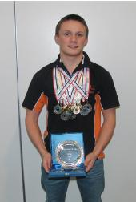 His other colour of medals came in the boys Open 100m Butterfly and 1500m (silver), Open 50m Butterfly (bronze) Junior silver in the 50m Breaststroke, 100m Butterfly and the 400m Individual Medley, a bronze in the Junior 200m Individual Medley, silver in 13/14yrs 200m Freestyle team event and with a bronze in the 13/14yrs Medley team event, yet another bronze in the 200m Breaststroke. His points total, earned him over the course of the championships, top 14yrs old male swimmer. Ashley now turns his attentions to competing at the Regional Championships in June, where his times and events will have more purpose with regards to him swimming at this year’s National Swimming Championships in Sheffield. Derventio Open Meet - Feb 2013 The first day belonged to Brandon Sharkey (14years) who set personal best times in all his swims. Brandon competed in the; 100m Freestyle 57.89sec (7th) 200m Individual Medley 2min 23.19sec (6th) 50m Breaststroke 34.89sec (5th) 100m Butterfly 1min 01.68sec (3rd). Oliver Rose (15 years) who had set his sight on gaining his British International qualifying time of 32.68sec, went agonisingly close to achieving it, when he finished in a time of 32.69sec (7th) Callum Chapple (16 years) set a personal best time in the 50m Freestyle (26.40sec), in his other swims; 100m (56.71sec) Freestyle and the 50m Butterfly (29.06sec), he gave a good account of himself, but it was in the 200m Freestyle that Callum excelled himself and although he was just outside of his personal best time, it was the best I’ve seen him swim for a awhile. He had made the final of this event, but due to bad weather forecast over the Peaks, we decided to give this final a miss. Cameron Jones (15 years) competed in two events, the 100m Backstroke and the 50m Breaststroke. Although Backstroke is Cameron’s number stroke, it was in the 50m Breaststroke that Cameron showed a high level skill and speed, when he finished in a time of 35.85sec (pb) Alisha Hawkins (11 years) had a busy weekend; she competed the 50m, 100m, 200m, 400m Freestyle, the 200m Individual Medley and the 50m Butterfly. Alisha had set personal best times in the 100m Freestyle 1min 09.71sec (7th) 50m Butterfly (34.86sec) 4th, 50m Freestyle (32.35) and the 200m Individual Medley (2min 55.38sec) in the 200m Freestyle Alisha had set a seasonal best long course time of 2min 31.26sec. Alex Law, who needs to compete in 50m pools to gain his NQT, was unfortunate to only have one swim at Derventio, this was in the 50m Backstroke, which is not a National Youth event. However, it is an event he could do in the forth coming British International competition to be held in Leeds next month. Alex time wasn’t quite fast enough for him to compete at this event. Swimming for Loughborough University, was our very own Vicky Cunningham. Vicky had made the finals in all her Freestyle events; 50m (4th) 100m (6th) and the 200m (8th). Winsford Swimming Club had a lot of rejections from this gala due to the rule changes over the 15 year olds having to achieve their National Qualifying Times in 50m pools only. With clubs scrambling for places, the opportunity for our younger and older swimmers to compete at these types of galas is becoming increasingly difficult. Generally, I was well pleased with our swimmers performances and although this meet had problems with regards to the rejections, I still think this meet is worth doing. Cannock Pheonix Open Meet - Feb 2013 We had 30 swimmers at the meet so I won't write about every swimmers races because I would be here all day typing away but collectively as a team I thought Winsford SC performed fantastically well. It was so pleasing to see a lot of swimmers racing over every distance and every stroke. It was also very pleasing that the vast majority of swimmers got on with the challenging racing schedule and performed a to a very high standard on all swims. It was also very pleasing to see so many youngsters coming through and competing for winsford SC. It was also very pleasing to see our senior swimmers mixing and supporting the less experienced amongst the team. Winsford SC picked up thousands of PB's, Medals and Trophies, so many that I couldn't keep count! So many that I am sure some swimmers had a struggle to carry all the marble trophies home! But I have to say Well Done to every swimmer who competed because every person can take something away and that is race experience. It is very important to race, so we can all practice what we have learnt in training and put into a race situation. Racing also shows me who has the guts and determination for the cause and the fight to succeed in this competitive sport. Every swimmer raced with great determination, so well done. For me personally I really enjoyed being poolside with all the swimmers, it makes a huge difference to have a large team competing. Every swimmer who was there on sunday contributed to Winsford SC being awarded Top Club at the meet. This a great achievement made by all the swimmers and it is another trophy for the cabinet, it just shows what we can do on the swimming circuit. Well Done to everyone (the swimmers, team managers (Jenny and Peter) and most of all the swimmers without you being there it wouldn't have been the same! Also thank you to Cannock Pheonix for providing a great buffet at dinner time!) and thank you to all parents for supporting the meet. It was a very good day and it was also Charlotte Pagetts birthday! Dan. As you can see I won't be signed up the Daily Mail anytime soon !! Zonal Meet produuces National and British QTs Vicky had a very successful weekend, as she gained both her National Qualifying Time and British International time in the 50m Freestyle. She clocked 27.07sec in the heats only to better that time in the final with a time of 26.88sec which gave her bronze medal. Ashley Hogg, had a number of swims but was setting his sight on the 1500m Freestyle British International Time to add to his 100m Butterfly time, which he had achieved last weekend at the Derby long course meet. Chasing a time of 16min 49.11sec to qualify, Ashley finished in a time of 16min 49.48sec, just 0.37sec outside the British time but was well inside his National Youth Time and placed him 3rd junior in that event. In the 100m Butterfly final, Ashley managed to lower his entry time and picked up his second 3rd junior place, in a time of 58.88sec. Ashley's other swims, were in the 200m Individual Medley (8th place) and 400m Individual Medley (Ashley pulled out of the final of this event, so he could concentrate on his 1500m Freestyle) Callum Chapple, managed to improve on his 200m Breaststroke long course time, with a 5sec pb and with a solid swim in the 200m Freestyle, Callum came away reasonably satisfied. City of Derby Meet The City of Derby Meet attracted the very best of British Age and Youth swimmers from all over the Country. The competition was held over two days at the Pond Forge International swimming pool. Competing for Winsford was, Emma Rodaway, Callum Chapple, James Shanley, Alex Law and Ashley Hogg. Performer of the weekend for Winsford, has to go Ashley Hogg. Ashley’s swam in the 200m Individual Medley, 400m Freestyle, 100m/50m Butterfly and the 200m Breaststroke. Ashley made the finals in the 200m Individual Medley and the 100m Butterfly, in these events; he had set personal best times, with a National Youth Qualifying time being achieved in both the heats and the final of the 100m Butterfly. In the middle distance event, Ashley won gold in his age group for the 400m Freestyle and then set another personal best in 50m Butterfly. To finish off an excellent weekend of competition, Ashley competed in his last event, the 200m Breaststroke, which to his delight and Winsford, was enough to earn, top boy of the meet (14years). Ashley won medals in the following events: Gold 400m Free, Silver 100m Butterfly & Bronze 50m Fly James Shanley, who was restricted to competing in more events, because the tough qualifying times, managed to do personal best times in all his events, 50m Backstroke, Freestyle and Butterfly, Alex Law is beginning to show signs of improvement and gave a good account of himself in both the 50m and 100m Butterfly, where he set a seasonal best and personal best time respectively. In his other events, the 100m Freestyle and Backstroke, he gave a solid performance. Callum Chapple, replicated pretty much the same as Alex, with the additional events making up his weekend of competition, the 200m Individual Medley, 200m Freestyle and 50m Breaststroke. Again Callum is just swimming outside of his personal best times, but I’m sure it won’t be long until he’ll be back to his very best. Emma Rodaway only had one event to do, which was in the 100m Breaststroke. This event, for me, was more about Emma changing her kick pattern, than setting a personal best time. I’m please to say that she did exactly what I asked of her and although her time was slower than she would have liked, swimming to instructions is just has important and can be just as rewarding. The competition was long and hard, but the meet represents the level at which our top swimmers should be aiming for. With the National Youth and Senior Qualifying times now having to be achieved in 50m pool only, it is important for those swimmers who are serious about wanting to compete the highest level, to start entering more Long course meets. Manchester SnOwpen - Dec Cheshire Junior Gala - Nov 1st - Winsford - 295 Arena B Final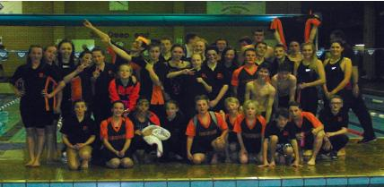 NWR Winter Champs Warrington Warriors Percy Meet 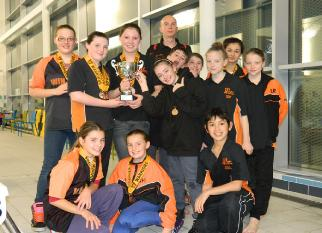
Shrewsbury Evolution Winter Meet 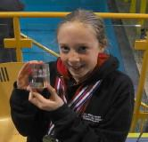
Macclesfield Cheshire Graded swim meet Wrexham Sprint meet Stafford APEX swim meet ASA Talent Development Programme 2012-13 North West Region Robin Hood Ponds Forge Sheffield The fourteen year old boys stole the limelight with their haul of medals. Ashley Hogg brought home gold in the 400m Freestyle, 200m Individual Medley, 100m Butterfly and 200m Breaststroke as well as a bronze medal in the 50m Butterfly. Sam James came away with gold in the 200m Freestyle and 50m Backstroke. Silver medals were won in the 100m Breaststroke, 50m Freestyle, 200m Breaststroke, 50m Butterfly, 100m Freestyle and a bronze in the 200m Individual Medley. Brandon Sharkey took silver in the 200m Butterfly and bronze medals in the 100m Butterfly and 50m Breaststroke. The fifteen year old category saw Oliver Rose take gold in the 50m Breaststroke, silver in the 200m Breaststroke and 50m Butterfly and bronze in the 100m Breaststroke. Molly James secured gold in the 50m Backstroke. Sixteen year old Alex Law fought off the opposition to win a bronze medal in the 200m Backstroke. Seventeen year olds Emma Rodaway and Charlotte Carter showed their strength with Emma gaining silver in the 50m and 200m Breaststroke and Charlotte gaining silver in the 50m Backstroke. Eleven year old Alisha Hawkins, making her debut at the venue, won a bronze medal in the 200m Freestyle. Team members, Alissa Blackshaw, Adam Blackshaw, Charlotte Paget, Eleanor O’Grady, Isabella Burton, Hannah Young, Kate Young, Amy Booth, Lizzie Oliver, Calum Chapple and Team Captain, James Shanley kept the flag flying for Winsford as each of them gained personal best times in a gala where the standard of swimming was extremely high. Coach Dave Pettengell stated that he was very proud of his team. Not only for their achievements, but also the level of support they gave to each other throughout the event. |
||||